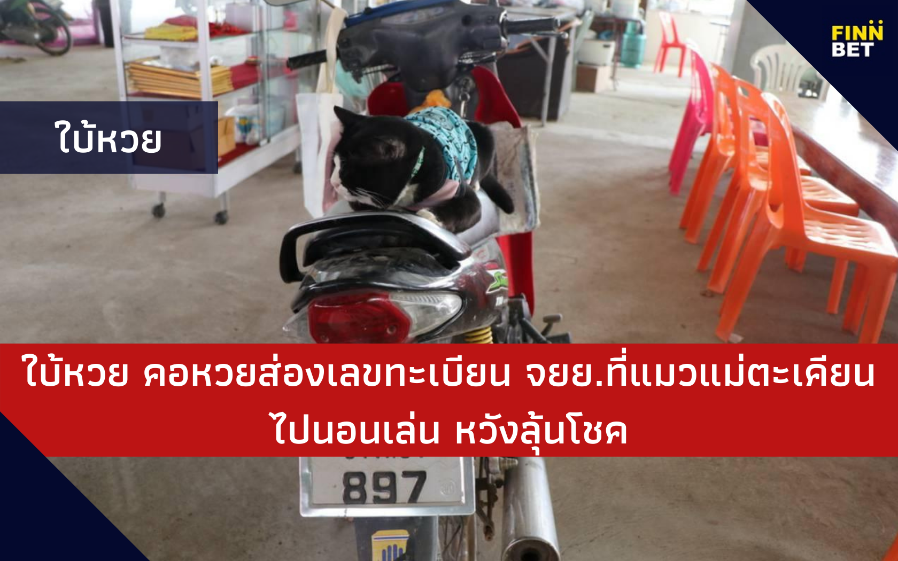

ซื้อหวย ออนไลน์

ใบ้หวย คอหวยส่องเลขทะเบียน จยย.ที่แมวแม่ตะเคียนไปนอนเล่น
คอหวยส่องเลขทะเบียน จยย.ที่แมวแม่ตะเคียนไปนอนเล่น หวังลุ้นงวดนี้
คอหวยส่องเลขทะเบียน จยย.ที่แมวแม่ตะเคียนไปนอนเล่น หวังลุ้นโชคงวดนีั้
คอหวยส่องเลขเด็ด จยย.ทะเบียนอ่างทอง ที่ไอ้โทน แมวแม่ตะเคียนวัดใหม่โคกมะรุม อ่างทอง นอนเล่นอยู่บนเบาะ ด้านแฟนคลับสั่งกระเป๋าผ้ามีรูปเจ้าโทน เชื่อเป็นสิริมงคลได้ร่วมทำบุญสมทบทุนสร้างโบสถ์
ที่บริเวณ วัดใหม่โคกมะรุม ตำบลม่วงเตี้ย อำเภอวิเศษชัยชาญ จังหวัดอ่างทอง นักเสี่ยงดวงที่เดินทางมาขอโชคลาภแม่ตะเคียนที่วัดใหม่โคกมะรุม ต่างไม่พลาดตามหาเจ้าโทน ส่องเลขเด็ดไอ้โทนแมวแม่ตะเคียน แมวเซเลบขวัญใจชาวบ้านนักเสี่ยงดวง ใบ้หวยแม่นถูกกันเป็นประจำ ได้ขึ้นไปนอนบนเบาะรถจักรยานยนต์ ฮอนด้า สีแดง หมายเลขทะเบียน กตล 897 อ่างทอง อย่างสบายอุรา นักเสี่ยงโชคไม่พลาดส่องหมายเลขทะเบียนรถจักรยานยนต์ที่เจ้าโทนขึ้นไปนอนเล่นบอกใบเลขเด็ดนำไปเสี่ยงดวง
นายวิชาญ พุ่มสวย อายุ 63 ปี กรรมการวัดใหม่โคกมะรุม กล่าวว่า ในช่วงนี้กระแสเจ้าโทนแมวนำโชคมาแรง บอกใบ้ให้เลขเด็ดแฟนคลับได้โชคลาภกันอย่างต่อเนื่อง จึงมีเสียงเรียกร้องให้ทางกรรมการวัดทำของที่ระลึกที่มีรูปเจ้าโทน เพื่อที่แฟนคลับจะร่วมบุญในการอุดหนุนสินค้า นำเงินช่วยในการสมทบทุนสร้างโบสถ์วัดใหม่โคกมะรุม และเป็นค่าอาหาร ค่ายาเจ้าโทน ทางกรรมการวัดจึงทำกระเป๋าผ้าลดโลกร้อน มีรูปเจ้าโทนให้แฟนคลับนำไปเป็นที่ระลึกเพื่อความเป็นสิริมงคล และมีการสั่งจองกันมาอย่างต่อเนื่อง
สำหรับ “เจ้าโทน” เป็นแมวเพศผู้ตัวขนาดใหญ่ สีดำ-ขาว อายุประมาณ 3 ปี ที่ติดมากับต้นตะเคียนแม่ย่าสร้อยสุวรรณ ที่กรรมการวัดใหม่โคกมะรุมได้ไปอัญเชิญมาจากจังหวัดสุพรรณบุรี ระหว่างทางได้ยินเสียงแมวร้อง จึงได้จอดรถเทรลเลอร์เพื่อตรวจตามหาเสียงแมวพบว่า ในโพรงแม่ตะเคียนแม่ย่าสร้อยสุวรรณนั้นมีแมวสีขาว-ดำตัวขนาดใหญ่ ได้ซุกซ่อนอยู่ด้านในโพรง จึงได้นำมาเลี้ยงดูอยู่ที่วัดแล้วให้ชื่อว่าเจ้าโทน
เนื่องจากเจ้าโทนเป็นแมวที่มินิสัยเชื่อง จะชอบนอนอยู่ในโพรงต้นตะเคียนแม่ย่าสร้อยสุวรรณ และได้คลุกคลีอยู่กับกรรมการวัด จึงเป็นขวัญใจของกรรมการวัดใหม่โคกมะรุม
นอกจากนี้ เจ้าโทน ยังชอบนอนตามแผงสลากกินแบ่งรัฐบาล ที่ผ่านมาหากเจ้าโทนไปนอนทับสลากกินแบ่งที่แผงไหน มักมีนักเสี่ยงดวงไปซื้อแล้วถูกรางวัลเป็นประจำ จนทำให้ซื่อเสี่ยงของเจ้าโทนดังไปทั่วสารทิศ และหากเจ้าโทนเดินไปมุดหรือขึ้นไปเดินเล่นที่รถยนต์ และบางครั้งก็ขึ้นไปนอนบนรถจักรยานยนต์ นักท่องเที่ยวไม่พลาดที่ส่องหมายเลขทะเบียนรถยนต์นำไปเสี่ยงดวง
วัดใหม่โคกมะรุม เป็นวัดแห่งเดียวในประเทศที่มีพ่อปู่แม่ย่าตะเคียนทองมากที่สุดถึง 50 ต้น หลังจากที่ผ่านมา ได้มีชาวบ้านได้มาแจ้งให้ทางคณะกรรมการวัดไปอัญเชิญมาจากสถานที่ต่างๆ ที่ได้พบต้นตะเคียน ซึ่งชาวบ้านมีความเชื่อว่าหากพบเจอต้นตะเคียนที่อยู่ภายในบริเวณบ้านหรือสถานที่ของตนเองต้องนำไปถวายวัด เพื่อให้แม่ตะเคียนมีที่อยู่อย่างร่มเย็นเป็นสุข ให้ชาวบ้านกราบไหว้ขอโชคลาภตามความเชื่อ


31 comments
รชนีย์Jan 08, 2021
นักเสี่ยงโชคไม่พลาดแน่นอน ซื้อทุกสำนัก 5555
นนท์Jan 07, 2021
แฟนคลับเจ้าโทนค่ะ 5555
จิราพร สุรลีJan 11, 2021
สามตัวตรงละงวดนี้ ต้องมาละ.
วรรณชนกJan 07, 2021
ใช่ๆ นี้ซื้อใน finnbet